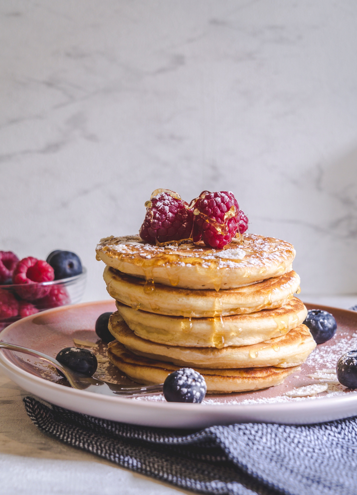

Pancakes

Description
A pancake (or hot-cake, griddlecake, or flapjack) is a flat cake, often thin and round, prepared from a starch-based batter that may contain eggs, milk and butter and cooked on a hot surface such as a griddle or frying pan, often frying with oil or butter.
It is a type of batter bread.
Ingredients
- 1 cup all-purpose flour.
- 2 teaspoons baking powder.
- 1 teaspoon salt.
- 1 egg, beaten.
- 1 cup milk.
- 2 tablespoons vegetable oil.
Steps
- In a large bowl, mix flour, sugar, baking powder and salt. Make a well in the center, and pour in milk, egg and oil. Mix until smooth.
- Heat a lightly oiled griddle or frying pan over medium high heat. Pour or scoop the batter onto the griddle, using approximately 1/4 cup for each pancake. Brown on both sides and serve hot.